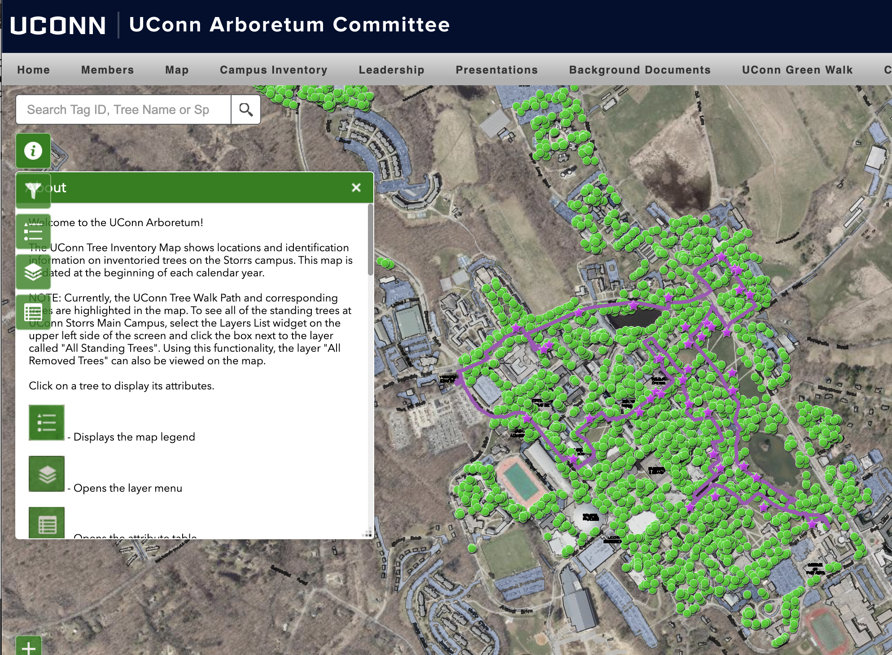
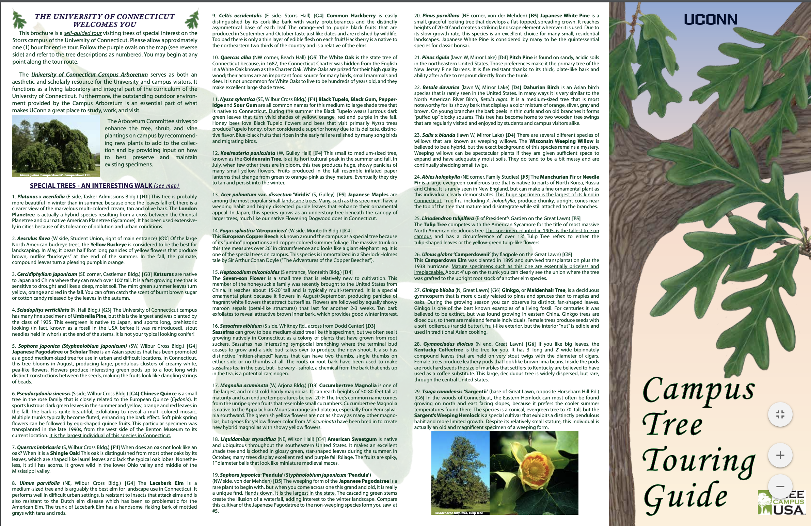

Idea Formation

Going into this project, I knew I would like my senior project to incorporate both my concentration of web design and my passion for photography/videography. In this project, I started by proposing a different, simpler styled tree walk map of the UConn campus-based off the database from the arboretum website/database. The database at first glance is clunky; it has so much great data, but it’s a lot to present to a casual user (pictured on the top left) . Their brochure is effective, however, during COVID I would like to enhance the experience by providing the narrative with clear photos/videos/other media to easily reference the tree/make a better user-experience while on a self-directed tour based.

In the start, I also envisioned a self-care component—highlighting little known places I may go to recharge. The map is inspired to be like a less-styled club penguin version of the UConn map, to host my trees/nature areas. The art will definitely be less extreme. I want the map to be different from the tree database’s build of a standard Google satellite view. Nature areas like Horsebarn/Mirror Lake will have video elements and some form of meditation audio to calm the mind. Buildings on the map will be minimized to shapes.